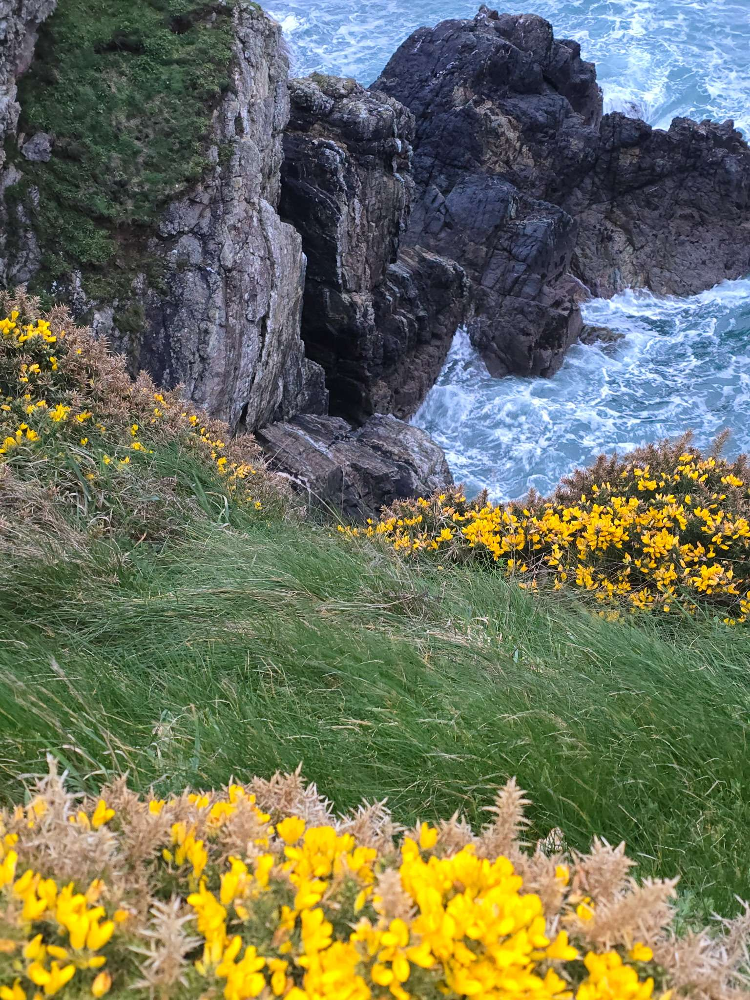

About me
I have always enjoyed working with my hands and exploring how computers work. I find it rewarding to solve problems while creating something useful at the same time. This passion led me to pursue a career in Computer Science. I am based in Sedalia. I am currently attending State Fair Community College, where I am pursuing two associate degrees.
When I am not programming, I enjoy playing video games and reading. Both hobbies challenge me to think critically, solve problems, and approach situations from different perspectives. These skills complement my interest in Computer Science and help me continue developing as a problem solver.
